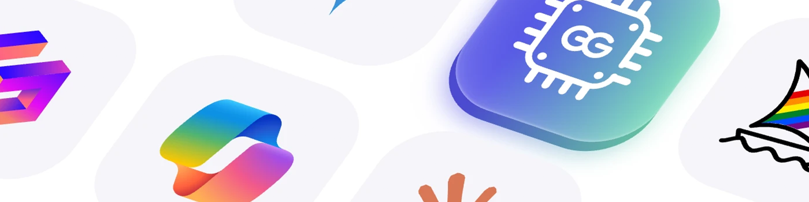

2025 年 6 個ChatGPT 替代品：哪一款最適合你？
人工智慧的發展速度確實令人驚嘆——它已經改變了我們的工作和生活方式。
根據 Gartner 的數據，到 2028 年，我們至少 15% 的日常工作決策將借助生成式人工智慧做出。DemandSage 的研究表明，截至 2025 年 6 月，ChatGPT 每週擁有 8 億活躍用戶，每日用戶約 1.226 億，每天處理超過 10 億次查詢。這是一個驚人的用戶數量。
毫無疑問，ChatGPT 是當今人工智慧領域最響亮的名字。然而，在日常使用中，我也注意到了它的一些不足之處。雖然它是一款可靠的全能助手，但在某些任務上，它的精度並不總是能與專業工具相媲美，有時甚至會為了取悅用戶而犧牲準確性。
因此，我與其他 AI 愛好者合作，測試了市面上主流的 ChatGPT 替代方案。經過大量的實際測試，我們為你精心挑選了 7 款最佳 ChatGPT 替代方案。
什麼是好的 ChatGPT 替代品？
要真正有資格成為 ChatGPT 的替代品，工具必須提供類似的體驗——自然、直觀、易於理解，而你不必擔心被誤解或不斷遇到錯誤。
如果它缺乏這些基本品質，它需要以其他方式來彌補，例如在特定用例中表現出色或提供與眾不同的卓越用戶體驗。
以下是我們用來選擇 2025 年最佳 ChatGPT 替代方案的關鍵標準：
- 在某些方面優於 ChatGPT
ChatGPT 仍然是最強大的通用 AI，但一個優秀的替代方案應該至少在一個領域展現出明顯的優勢。例如，Perplexity 在實時搜索方面表現突出，Claude 擅長處理長文本和複雜文檔，而 Midjourney 則可以從文本生成高質量的視覺效果。
- 輕鬆上手——無需任何技術背景
雖然"本地部署 AI 模型"聽起來很吸引人，但大多數用戶只是想要一個可以立即使用的工具。我們推薦的所有工具都無需編碼或設置——只需註冊即可開始使用。
- 穩定可靠
一個經常崩潰或報錯的聊天機器人基本上是無法使用的。我們列出的每款工具都經過了穩定性測試，因此你可以放心，它們會在你最需要的時候正常工作。
- 物超所值
在尋找 ChatGPT 替代方案時，價格實惠也是一個關鍵因素。一款工具是否提供免費試用或更具吸引力的訂閱價格，會對你的決策產生重大影響。
最佳 ChatGPT 替代方案一覽
基於這些標準，我們從眾多 AI 工具中甄選出以下七款 ChatGPT 替代方案。無論你是想將 AI 無縫融入日常工作流程，需要更強大的信息搜索功能，還是僅僅希望獲得更高的性價比，這些工具都能像 ChatGPT 一樣滿足你的需求，甚至在某些方面甚至更勝一籌。
| 工具名稱 | 最適合 | 定價 |
|---|---|---|
| Claude | 內容創作，專業人士 | 免費；Claude Pro 每月 20 美元 |
| Perplexity AI | 信息檢索、知識搜索 | 免費；Perplexity Pro 每月 20 美元 |
| Midjourney | 視覺創意、設計師、AI藝術 | 每月 10 美元起 |
| DeepSeek | 開發人員、學者、高級推理 | 自由的 |
| 谷歌Gemini | Google 生態系統用戶 | 免費；Gemini Advanced 每月 19.99 美元（前 2 個月免費） |
| 微軟 Copilot | 微軟生態系統、辦公自動化 | 免費；Copilot Pro 每月 20 美元（第一個月免費） |
自 ChatGPT 推出以來，我一直密切關注 AI 的快速發展，進行深入測試並製作了廣泛的內容，包括實用的ChatGPT 技巧、使用指南、與其他 AI 工具的詳細比較以及各種 AI 模型的分析。
為了更好地了解各種 ChatGPT 替代方案的優缺點，我們花了二十個小時親自測試市場上最流行的 AI 工具。
我從開發者和日常用戶的角度出發，整理了這篇全面的評測，分享基於實踐經驗的見解。我們相信，親身體驗才能帶來最有價值的建議，希望本指南能幫助你做出明智的決定。
專業人士的最佳 ChatGPT 替代方案

主要優勢：
- 擅長處理長文本
- 表達自然，邏輯清晰
- 穩定可靠
缺點：
- 無法生成圖像
Claude 不會像 ChatGPT 那樣捏造信息或試圖"取悅"用戶。根據《華盛頓郵報》的一項研究，在包括 ChatGPT 在內的多款測試的領先工具中，Claude 是唯一一個沒有生成任何虛假或捏造內容的 AI 模型。
它非常擅長提供清晰、結構良好的答案，特別是在組織長文本、總結要點或改進措辭時。
雖然它不像 ChatGPT 那樣提供基於文本提示的圖像生成功能，但在分析和理解上傳圖像方面，它更加可靠。它可以準確地處理需要精確視覺解釋或上下文圖像分析的任務。
如果你經常撰寫長篇內容，或者需要閱讀大量複雜的材料，例如工作報告、學術論文、合同或會議記錄，Claude 是你的理想之選。你可以一次性輸入整個 PDF 或數千個單詞，它不會跳過任何內容或誤解你的文本。相反，它會幫助你識別最重要的內容。
定價： 免費；專業版每月 20 美元。
真實用戶評論
評分： 4.4/5
Claude 的表格和圖表運用得非常出色——它能夠清晰地理解數據，並提取關鍵點，無需我費力。它還有助於深入研究財務狀況、提前規劃，並將大目標分解成更小、更易於管理的步驟。它的信息組織方式讓一切都變得更加清晰，不再那麼讓人不知所措。
平台：G2
審閱者：數字營銷人員
實時網頁搜索的最佳 ChatGPT 替代方案

主要優勢：
- 目前最好的搜索功能
- 答案包括引用來源
缺點：
- 對於一般任務來說不如 ChatGPT 強大。
如果你經常需要查找信息、撰寫論文、搜索數據，或者希望你的 AI 答案始終包含來源，那麼 Perplexity AI 實際上可能比 ChatGPT 更適合。
Perplexity 最大的優勢在於每個答案都附有來源鏈接，讓你始終了解信息的來源。這讓你可以輕鬆地核實事實、深入研究某個主題，或在作品中直接引用來源。
此外，Perplexity 還推出了全新的實驗室模式——一個專為更高級任務設計的強大工作區。它允許你根據查詢生成結構化的報告、表格、圖表、代碼片段，甚至簡單的 Web 應用程序。
另請閱讀：Perplexity 與 ChatGPT：哪種 AI 工具更好？
定價： 免費；專業版每月 20 美元。
真實用戶評論
評分： 4.8/5
ChatGPT 並不總是像它應該的那樣值得信賴。這就是 Perplexity 誕生的原因。Perplexity 就像一個由人工智慧驅動的搜索引擎。它能從網絡上為你提供相關信息，並顯示所使用的來源。而且，它完全免費使用，甚至無需註冊賬戶即可使用。快來試試吧！
平台：Product Hunt
人工智慧圖像生成的最佳 Chatgpt 替代方案

主要優勢：
- 極高質量的圖像生成
- 風格多樣，效果可控
- 非常適合激發創意
缺點：
- 學習曲線陡峭
- 缺乏其他典型的人工智慧功能
如果你熱愛創意，或經常需要為工作添加引人注目的圖像，Midjourney 是你的理想之選。它可以快速生成令人驚艷、富有想像力的圖像，如同專業設計師的傑作。
然而，Midjourney 並非一款易學易用的工具，你可能需要依賴一些官方的提示。建議在開始使用之前先查閱一些指南。
雖然 ChatGPT 現在也提供基本的圖像生成功能，但它實際上只適合簡單的日常需求——專業程度和圖像質量根本無法與 Midjourney 相比。
在圖像細節、藝術感、風格控制和創作可能性方面，Midjourney 仍然是專業設計師、插畫師和內容創作者的選擇。
定價： Midjourney 起價為每月 10 美元，標準計劃價格為每月 30 美元。
真實用戶評論
評分： 4.5/5
Midjourney 始終如一地創作出視覺震撼的高分辨率圖像，其細節和質量往往超出預期。它能夠創造性地詮釋提示，使其成為概念藝術、情緒板和實驗設計的絕佳工具。其輸出效果逼真且專業，對於生成能夠激發或增強創意項目的視覺效果而言，具有不可估量的價值。
平台：G2
評論者：時尚和企業攝影師
最佳免費 ChatGPT 邏輯推理替代方案
DeepSeek

主要優勢：
- 強大的邏輯推理能力
- 完全免費，無需註冊
缺點：
- 嚴格的內容審核
- 與 ChatGPT 相比功能較少
DeepSeek 是由中國團隊開發的開源 ChatGPT 替代方案，專注於強大的邏輯推理能力和完全免費的訪問。
當初推出 R1 推理模型時，它挑戰了"高級推理 AI 只有 OpenAI 引領"的觀念。當時，DeepSeek 向公眾免費開放這一強大模型，在開源社區掀起波瀾，甚至引發股市暴跌。
如今，R1 仍然是最先進的開源推理模型之一，尤其擅長處理結構化問題、複雜的思維過程和代碼推理。任何人都可以在線使用它，無需註冊，這使得它成為那些尋求"免費 ChatGPT 替代品"的人的首選。
然而，DeepSeek 也有其局限性。它缺乏 ChatGPT 的圖像生成功能，而且其內容審核非常嚴格——它避開了中國政府認為敏感的話題。
如果你只關心強大的推理能力和免費訪問，並且不受這些限制的困擾，那麼 DeepSeek 絕對是目前最好的免費 ChatGPT 替代品之一。
定價： 免費
更便宜地訪問 ChatGPT 替代方案的技巧
ChatGPT雖然訂閱價格只有20刀，但是在國內付款並不太方便，即便你有一張visa信用卡，OpenAI也並不支持中國地區付款。
環球巴士也是一個知名的訂閱共享平台。通過與其他用戶共享賬戶，你可以訂閱各種高級服務，例如 ChatGPT Plus、Claude Pro、Midjourney 和 Perplexity Pro，價格遠低於官方價格。
除了價格優勢，環球巴士 還在安全性、穩定性和隱私保護方面表現卓越，並提供 24/7 全天候客戶支持，確保用戶無憂體驗。立即加入 環球巴士，以更低的成本獲取領先的 AI 模型，開啟你智能、高效、可靠的創作之旅！

真實用戶評論
評分： 4.2/5
我一直在使用 環球巴士 來以更低的價格訂閱 Spotify 和 Netflix 等服務，總的來說，體驗非常棒。價格比直接付費低得多，而且客服響應迅速，樂於助人。到目前為止，我還沒有遇到什麼大問題。除此之外，我強烈推薦它！Finish 的視覺效果非常寶貴，能夠激發或增強創意項目。
Google 集成的最佳 ChatGPT 替代方案
谷歌Gemini

主要優勢：
- 與 Google 服務無縫集成
- 利用 Google 搜索增強實時搜索
缺點：
- 答案質量不一致
- 編碼能力有限
說實話，如果你已經習慣了 Google 的生態系統，Gemini 真的能讓你的使用體驗更加便捷。無論你是在 Gmail 中撰寫郵件，還是在 Google 文檔中撰寫內容，它都能自然地融入你的工作流程，讓你輕鬆提升工作效率。
Gemini 是由 Google DeepMind 開發的模型，與其他 Google 產品緊密集成。它最大的優勢在於能夠無縫融入你的日常工具，例如 Gmail、YouTube、Google 搜索，甚至 Android 操作系統，讓你無需切換應用程序即可獲得 AI 輔助。
雖然在數據分析和推理方面，ChatGPT 仍然比 Gemini 更好，但如果你在日常生活和工作中依賴谷歌應用程序，Gemini 是你 ChatGPT 的最佳替代品。
定價： 免費；Gemini Advanced 每月 19.99 美元（前 2 個月免費）。
真實用戶評論
評分： 4.4/5
Gemini 給出了清晰的答案，並提供了所有參考資料和答案來源。它可以通過移動設備、PC、平板電腦，甚至 Docker 鏡像訪問（技術人員會理解它的易用性）。我個人認為 Gemini 會定期更新最新數據。
平台：G2
審閱者：計算機軟件領域的認證用戶
實現無縫生產力的最佳 ChatGPT 替代方案
微軟 Copilot

主要優勢：
- 與 Microsoft 365 應用直接集成
- 提高工作效率
- 使用與 ChatGPT 相同的大型語言模型
缺點：
- 與 ChatGPT 相比功能較少
如果你主要使用 Word、Excel、PowerPoint 或 Outlook 進行工作，那麼 Microsoft Copilot 無疑是你迄今為止最便捷的 AI 工具。它並非獨立的聊天機器人，而是內置於你熟悉和使用的 Microsoft 365 應用中。
無需切換選項卡或複製粘貼 - 只需開始在 Word 或 Excel 中輸入，Copilot 就可以幫助你繼續寫作、總結內容、潤色文本、生成圖表，甚至在你不確定如何表達你的想法時完成句子。
定價： 免費；Microsoft Copilot Pro 每月 20 美元（第一個月免費）。
真實用戶評論
評分： 4.4/5
我最喜歡 Microsoft Copilot 的地方在於它能幫我節省時間。它可以快速生成靈感、起草電子郵件，甚至還能匯總長篇文檔。感覺就像有一位助手幫我處理重複性任務，讓我可以專注於更重要的事情。它與 Office 工具的集成讓我可以輕鬆地跨應用工作，無需頻繁切換。它徹底改變了我的工作方式，提高了我的工作效率。
平台：G2
審稿人：數據數字與信息技術 DDIT
結論：最推薦的 Chatgpt 替代方案
Claude 擅長文本處理，Midjourney 是圖像生成的首選，而 Perplexity AI 則以研究和基於來源的答案而脫穎而出。
對於大多數用戶來說，尤其是那些想要使用多個強大模型而又不想不斷在平台之間切換的用戶來說，像環球巴士這樣的一站式平台特別實用。
環球巴士 匯聚了 GPT-5 和 Claude 等頂級模型，提供簡潔易用的界面和靈活的定價選項。它功能強大、價格實惠且易於使用。無論你是 AI 新手，還是希望提升生產力的專業人士，環球巴士 都能為你提供開啟智能助手之旅的絕佳起點。
立即開始使用 環球巴士 並享受卓越的 AI 體驗 - 節省你的時間和金錢！
常問問題
ChatGPT 的最佳替代方案是什麼？
Claude 是 ChatGPT 的最佳替代方案，它提供許多相同的功能，例如長上下文理解、高級推理和創意寫作。它由 Anthropic 開發，以其周到的語氣、可靠性和輕鬆處理複雜任務的能力而聞名。
有沒有像 ChatGPT 這樣的免費 AI 聊天工具？
當然！DeepSeek 是一款由中國團隊開發的人工智慧工具，完全免費使用，甚至在邏輯推理和數學問題解決等領域的表現甚至超越了 ChatGPT。它是目前最值得嘗試的免費 ChatGPT 替代品之一。
ChatGPT 是世界上最聰明的人工智慧嗎？
它並非在所有領域都是最明智的選擇。ChatGPT 是當今最強大的 AI 模型之一，尤其以其在文本處理方面的強大實力而聞名。但在圖像生成方面，像 Midjourney 這樣的模型能夠提供更專業的結果，更適合創意需求。